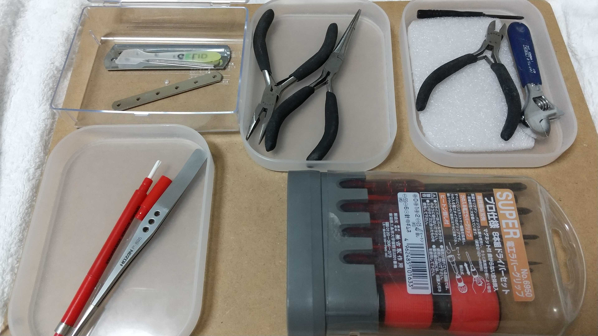
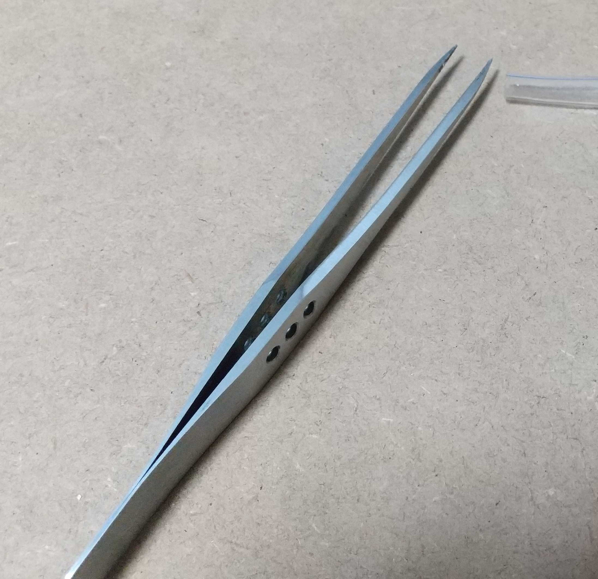
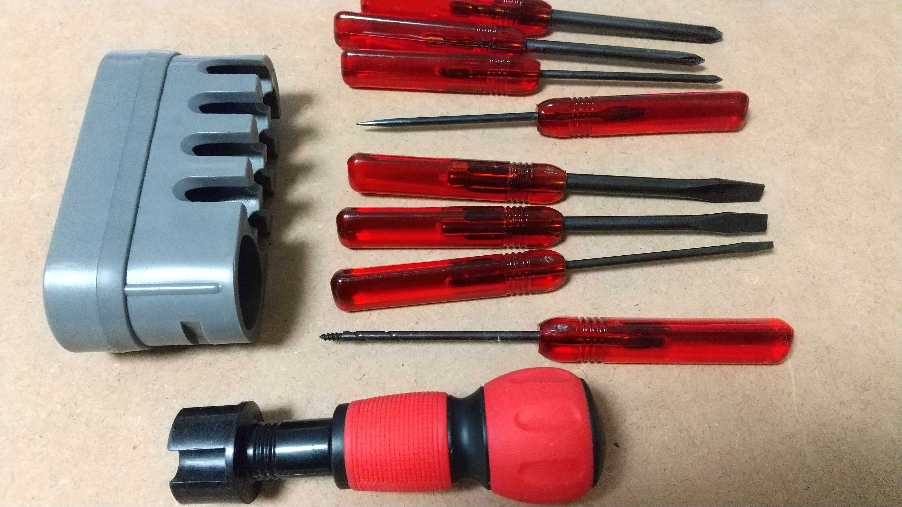
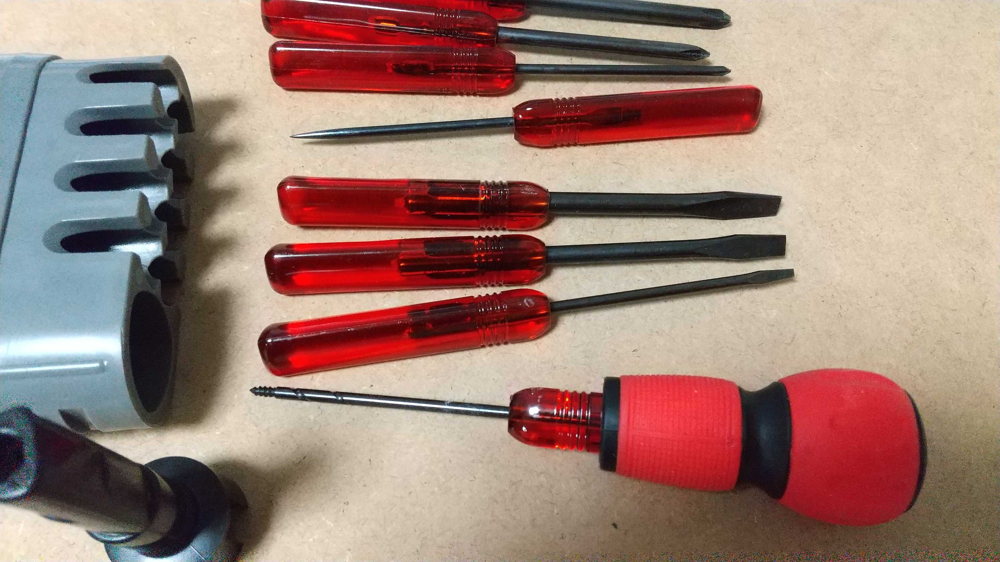
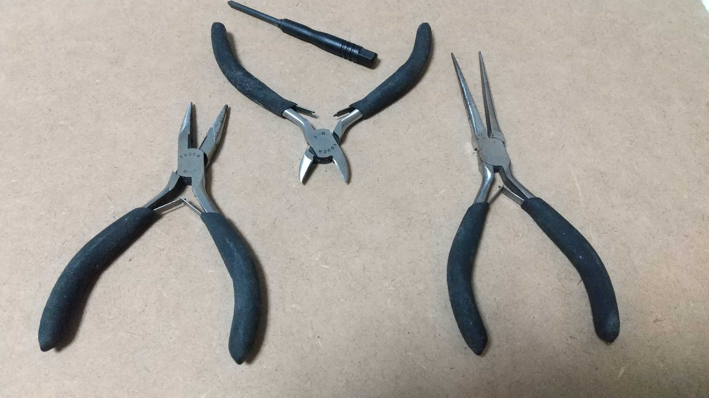
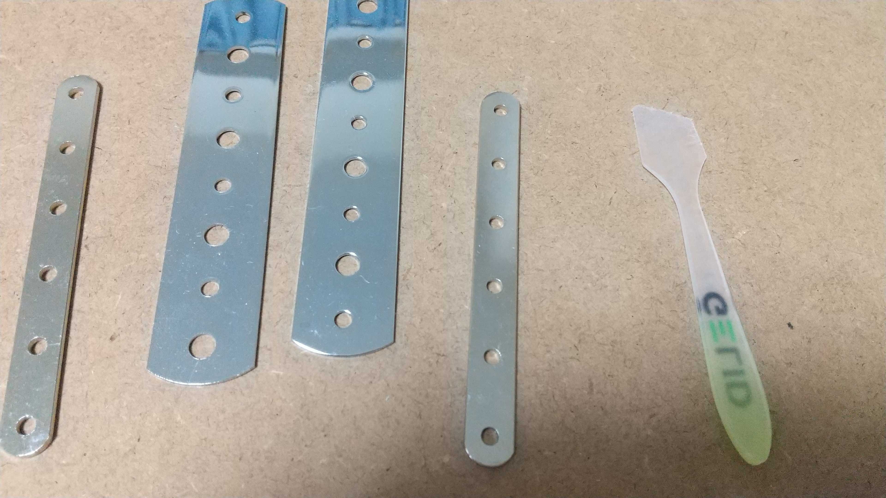
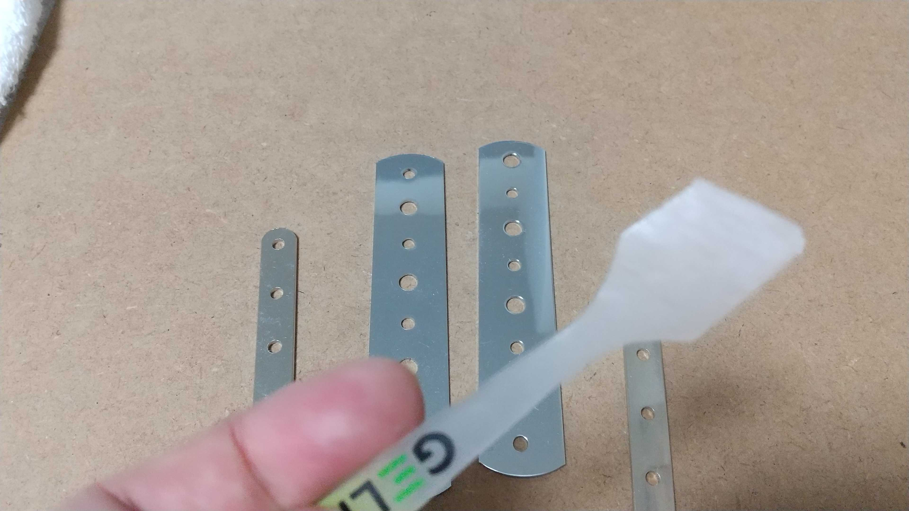
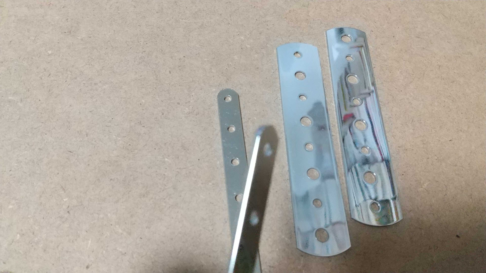
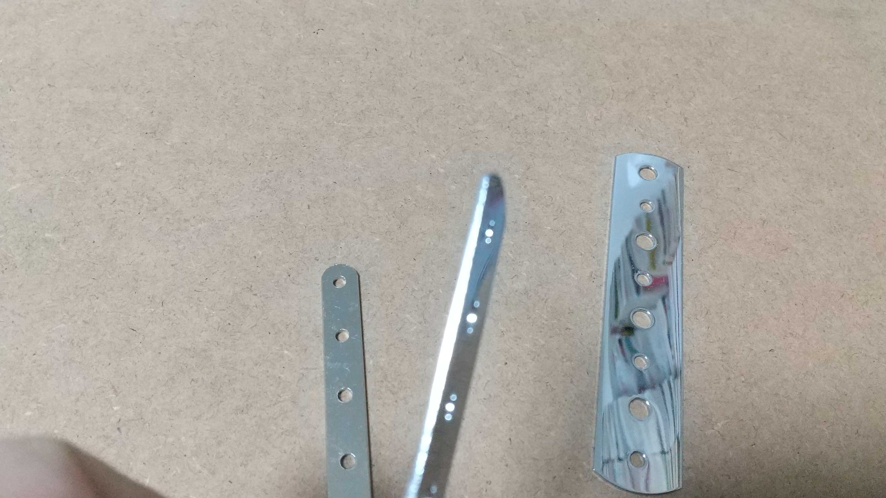

趣味の話
電子機器の分解や修理について
電子機器を使ったりいじったり、分解したり壊したり、修理したりするのが好きです。
修理といっても、あまり大掛かりなことは滅多にしません。
修理に使う道具など
一般的な工具のドライバーセット、精密ピンセット、小型のニッパー、細いラジオペンチ、軟質プラのヘラなどを使います。
精密ピンセットは小さな部品を扱うために先端が細く鋭くなったもの、または鉤型に曲がったものなどが適しています。
少し珍しい物としては、絶縁素材のドライバーがあります。
高電圧のかかる部品(古いCRT、ブラウン管の画像位置調整器)の調整などの際に安心です。
両端にプラス、マイナスのドライバーチップがついていて、ペンのようにポケットに固定できるのが気に入っています。
精密ピンセットは先端が細く加工され細かい部品を拾い上げたりつまんで固定するのに便利ですね。
分解修理の場合は、部品の固定やピックアップよりはピンや配線などの隙間に入り込んだ埃を取り除く用途の方によく使います。
用途により先端形状は様々ですが、ステンレス鋼の薄板などそれほど硬い素材ではないため、穴をあけるためにこじるなどの用途で使うとすぐに先端が曲がったり折れてしまいます。
小さな部品を拾い上げたり固定する以外の力のかかる用途に使う場合は、専用の工具を使った方がいいですね。
分解などで一番活躍するのは、ホームセンターなどで売っているドライバーセットです。
ドライバーセットも特殊なものではありません。ホームセンターや東急ハンズで購入したものです。
 ねじ回しの力を増強するためのハンドル(ドライバーの柄を太く掴みやすくするアタッチメント)もセット内容に大体入ってます。
細かい作業の際に、ニッパーやラジオペンチなどを使う場合もあります。
細いラジオペンチで部品を固定する場合もありますが、最近の電子部品は小さすぎてあまり使う機会はないですね。
といっても、通常の針金加工や電気工事用の物よりはかなり小さく、小型部品取り扱いや電子基板上で使うことを想定したサイズのものですね。
これらは秋葉原の電気街のコネクタ、工具専門店で購入したものです。
他に使うものとしては、軟質プラのヘラや薄い鋼板などがあります。
 これらはあるとかなり便利な道具ですね。軟質プラのヘラは元は熱伝導グリスの付属品でした。
ヘラの方はプラ部品のはめ込みの爪を折らずにケースの隙間からこじ開けるのに非常に有用です。ただし消耗品なので定期的に交換が必要そうです。
薄い金属板はホームセンターで購入した棚や家具などの補強用のねじ穴付き鋼板です。
薄い金属板は、ファンなどの回転軸に刺さった羽のある部品を壊さずに引き抜くのに大変重宝します。
マイナスドライバーを隙間に差し込んでこじるよりも安全に(壊さずに)部品を取り扱えるようになります。